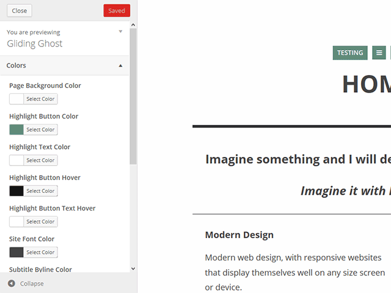
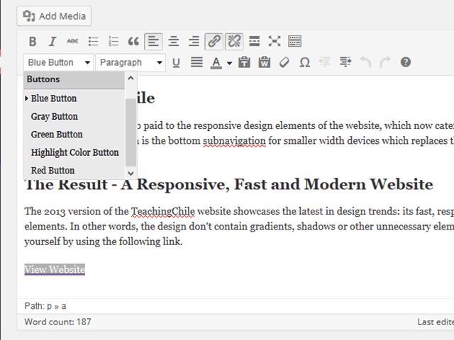
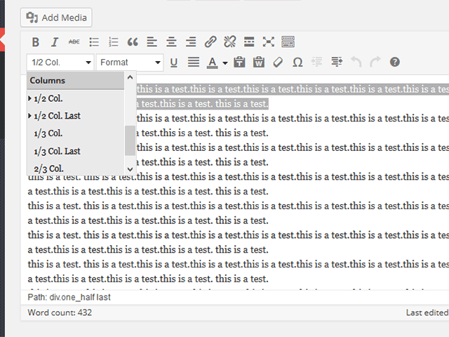

"Gliding Ghost 1.0 Wordpress Theme"
Documentation by “imaginalgo”
"Gliding Ghost 1.0 Wordpress Theme"
Thank you for your
interest in Gliding Ghost for Wordpress. This is a simple, minimalist WordPress theme based on the Glider theme for WordPress and the Ghostwriter theme for the Ghost CMS. This theme features ajax post loading, responsive design, support for portfolio post types, and more. This guide will help you get started.
Table of Contents
- What's New
- Gliding Ghost Features
- Installing Gliding Ghost
- Gliding Ghost Customizer
- Styles
- Help and FAQs
- Credits
A) What's New - top
The following is a list of changes, fixes and additions new in
version 1.0:
- This is the initial theme release. Everything is new. Enjoy!
B) Gliding Ghost Features
- top
Thank you for your
interest in Gliding Ghost for Wordpress. This is a simple, minimalist WordPress theme based on the Glider theme for WordPress and the Ghostwriter theme for the Ghost CMS. This theme features ajax post loading, responsive design, support for portfolio post types, and more. This guide will help you get started
This theme expands upon the original theme inspirations by adding a top bar that can be turned on/off. (inspiration: Tom Creighton, the Glider Wordpress theme creator) A custom post list for portfolio items has also been added. Finally, the theme has a dedicated Table of Contens page, where you can show two menus. (for pages or social websites, for example) Inspiration for this page and layout are thanks to Yaron Schoen. (visit his website)
I hope you enjoy this
theme.
Sincerely,
Mike Walsh, Imaginalgo.com
C) Installing Gliding Ghost
- top
- Login to your Wordpress admin page and activate Gliding Ghost
Theme. (if you are using the Multi Site function,
remember that you have to first "allow" the theme in the Super Admin.
- Main Navigation (Table of Contents): Create a page. Name it home
or whatever you like. Then, under Page Attributes,
where it says Template, choose Table of Contents. This will be the page where you show your site navigation. It will appear when someone clicks the menu button. (three horizontal lines) Two of the three menus that can be set with this theme will appear here.
- Home Page: If you would like one of your pages to be the front page of your website, go to the Settings -> Reading
page and choose a previously created page as the Front page.
Note: DO NOT set
your Table of Contents page - created in #2 - as the front page.
- If you would like to include a portfolio in your website, please install and activate the Portfolio Post Type plugin. (you should see a notification at the top of your screen) You will see a new briefcase icon appear between your table of contents icon and your post icon. (represented as a book) Your portfolio items will appear here.
- Gliding Ghost uses the built-in Wordpress Customizer for changing theme options. Continue reading to learn more.
D) Gliding Ghost Customizer - top
Gliding Ghost uses the WordPress Theme Customizer. You can find it by going to Appearance > Customize.

The Options should be fairly easy to understand, but below is a summary:
- Colors: Here you can change the colors of the background, font, link, button, border and more.
- Navigation: Here you can set the 3 navigation menus. You can also choose to show/hide the optional topbar. (by default it is turned off)
- Static Front Page: Set your Front Page and Posts Page here.
- Post List:
Here you can change the colors of the post list links, hover and hover background colors.
- Table of Contents: Set the page to use as the Table of Contents, change the colors, and set the two menu headers.
- Footer: Set the footer/credits text here.
- Custom CSS: Here you can add any custom CSS for your theme. It will override any existing CSS..
- Google Analytics: Here you can add your Google Analytics ID.
E) Styles
- top
In Gliding Ghost, you are able to create Buttons and Columns
using custom Styles. These are similar to Shortcodes, but if you later decide to switch themes, you don't have ugly coding in your posts. Here is a brief explanation of how to use the new Styles:
- Buttons:
If you would like to create a button, first highlight the text in the editor. Next, use the Styles menu and click the color button you want. It will automatically change to a button. You can create a link and add the button styles as well!

- Columns:
If you would like to create columns, highlight the paragraph and then choose the size of the column. Make certain that the last column in the row uses the Last column.

F) Help and FAQs
- top
The following are some frequently asked questions or confusing
points. Please read this document before asking questions!
- Where are the theme's sidebars, contact form, and sliders?
There aren't any. This is desgned to be a simple and minimalist theme.
- Can I use shortcodes/plugin/etc with this theme? You can certainly try. This theme has not been tested with every WordPress theme. No promises.
- Can I resell this theme? Nope. I am offering it for free. You must do the same.
- Do you know that your theme looks alot like Ghostwriter for Ghost CMS? Yes, I do. I ported Ghostwriter over to WordPress, combining it with elements of Tom Creighton's Glider theme. I added several new features, too.
- Are you the developer of the recommended Portfolio Post Type plugin? No. That is Devin Price over at WPTheming.com. If you have a question, please ask him about it.
- How do I change Gliding Ghost to Spanish?
First, you must have Wordpress installed in Spanish OR have the
language files installed. (read about this on the Wordpress.org
website) After this is done, go to Settings => General. The last
option allows you to select the language of your theme. Choose Spanish.
G) Credits -
top
It was a lot of fun to develop this theme. But, I couldn't
have done it with my own knowledge and artwork, so I would like to
thank the following for the necessary inspiration and knowledge:
- My wife and her patience.
- My coffee, for being plentiful.
- The music of Silvio Rodriguez, which kept me company many a
long night
- Wordpress,
for their awesome CMS/Blog software, especially now with version 3.8.
- roryg, for creating the
Ghostwriter theme for Ghost CMS
- Smashing Magazine, for sharing the Small Icons collection. (the ghost icon was used)
- Tom Creighton,
for the Glider WordPress theme, which helped in the development of Gliding Ghost, and for the topbar used at tomcreighton.com.
Again, thank you for downloading and using this theme.
imaginalgo
Table of Contents